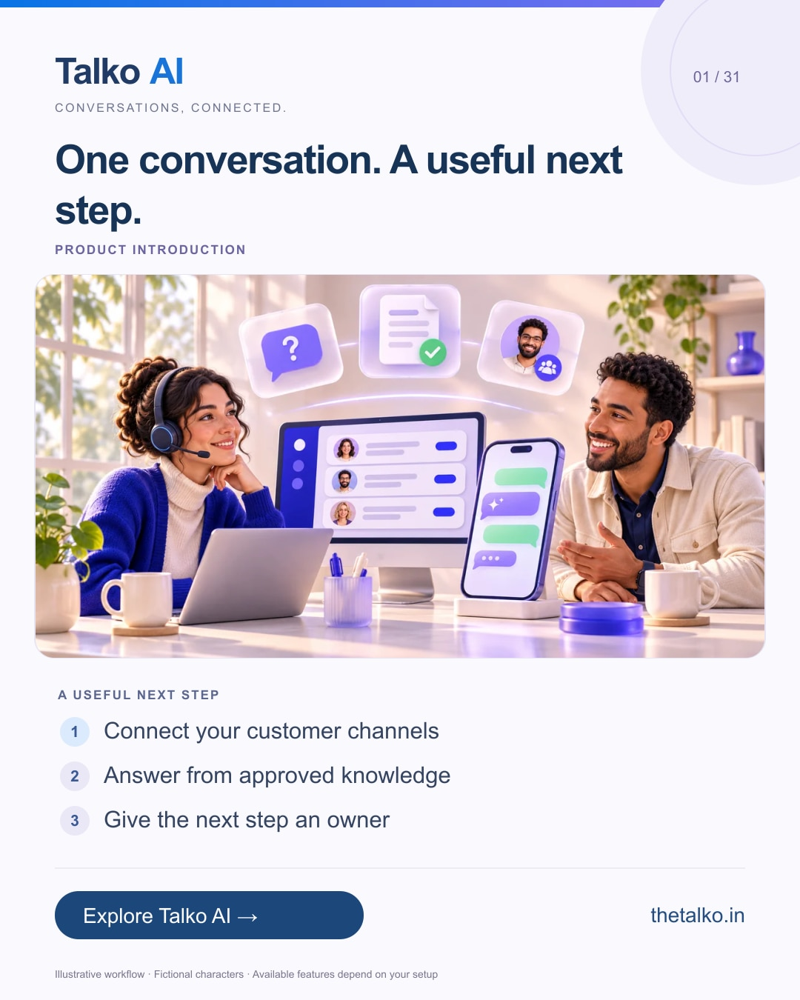

2026-11-05 · Product introduction
One conversation. A useful next step.
Download 1080 × 1350 image
Linkedin · 2026-11-05 19:30 IST
Your next customer might arrive in a DM, a review or a website question. The difficult part is keeping the context and deciding who should act next when those enquiries sit in separate places. A practical workflow: 1. Connect your customer channels 2. Answer from approved knowledge 3. Give the next step an owner Start with the channel that already brings you meaningful enquiries. Connecting every account on day one is not a requirement. Talko AI brings messaging, AI answers and team ownership into a connected customer workflow. Where does your team lose context today? Explore the workflow: https://www.thetalko.in/features?utm_source=linkedin&utm_medium=organic_social&utm_campaign=2026-11_to_2027-01_character_workflows&utm_content=one-connected-workspace #TalkoAI #CustomerExperience #BusinessAutomation
Instagram · 2026-11-05 20:00 IST
Your next customer might arrive in a DM, a review or a website question. The difficult part is keeping the context and deciding who should act next when those enquiries sit in separate places. → Connect your customer channels → Answer from approved knowledge → Give the next step an owner Start with the channel that already brings you meaningful enquiries. Connecting every account on day one is not a requirement. Talko AI brings messaging, AI answers and team ownership into a connected customer workflow. Save this workflow for your next setup session. Explore Talko AI through the link in our bio. Where does your team lose context today? #TalkoAI #CustomerExperience #BusinessAutomation #SmallBusiness #CustomerSupport
Facebook · 2026-11-05 19:00 IST
Your next customer might arrive in a DM, a review or a website question. The difficult part is keeping the context and deciding who should act next when those enquiries sit in separate places. Here is a useful place to start: • Connect your customer channels • Answer from approved knowledge • Give the next step an owner Talko AI brings messaging, AI answers and team ownership into a connected customer workflow. Start with the channel that already brings you meaningful enquiries. Connecting every account on day one is not a requirement. Where does your team lose context today? See how it works: https://www.thetalko.in/features?utm_source=facebook&utm_medium=organic_social&utm_campaign=2026-11_to_2027-01_character_workflows&utm_content=one-connected-workspace #TalkoAI #CustomerExperience #BusinessAutomation
Keywords: customer engagement platform, shared inbox, AI customer support, small business automation